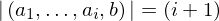
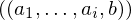

In [1]:
import proveit
# Automation is not needed when only building an expression:
proveit.defaults.automation = False # This will speed things up.
proveit.defaults.inline_pngs = False # Makes files smaller.
# import the special expression
from proveit.core_expr_types.tuples._axioms_ import tuple_len_incr
In [2]:
# check that the built expression is the same as the stored expression
%check_expr tuple_len_incr
In [3]:
# Show the LaTeX representation of the expression for convenience if you need it.
print(tuple_len_incr.latex())
In [4]:
# display the expression information
tuple_len_incr.exprInfo()
Out[4]:
| core type | sub-expressions | expression | |
|---|---|---|---|
| 0 | Operation | operator: 5 operand: 1 |  |
| 1 | Lambda | parameter: 24 body: 2 |  |
| 2 | Conditional | value: 3 condition: 4 |  |
| 3 | Operation | operator: 5 operand: 6 |  |
| 4 | Operation | operator: 7 operands: 8 |  |
| 5 | Literal |  | |
| 6 | Lambda | parameters: 19 body: 9 |  |
| 7 | Literal |  | |
| 8 | ExprTuple | 24, 10 |  |
| 9 | Operation | operator: 11 operands: 12 |  |
| 10 | Literal |  | |
| 11 | Literal |  | |
| 12 | ExprTuple | 13, 14 | |
| 13 | Operation | operator: 15 operand: 19 |  |
| 14 | Operation | operator: 17 operands: 18 |  |
| 15 | Literal |  | |
| 16 | ExprTuple | 19 |  |
| 17 | Literal |  | |
| 18 | ExprTuple | 24, 23 |  |
| 19 | ExprTuple | 20, 21 |  |
| 20 | ExprRange | lambda_map: 22 start_index: 23 end_index: 24 |  |
| 21 | Variable |  | |
| 22 | Lambda | parameter: 27 body: 25 |  |
| 23 | Literal |  | |
| 24 | Variable |  | |
| 25 | IndexedVar | variable: 26 index: 27 |  |
| 26 | Variable |  | |
| 27 | Variable |  |